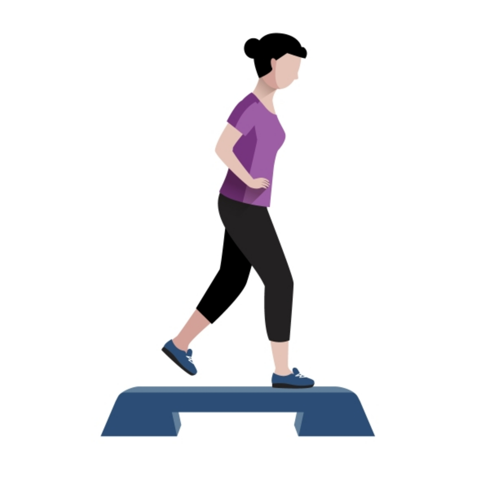

Self- Control/Self- Discipline

Scripture Guide
* 1. Lack of self-control brings misery
Like a city that is broken down and without walls [leaving it unprotected] Is a man who has no self-control over his spirit [and sets himself up for trouble].
He that cannot bridle his passions and emotions is like a ruined city without walls.
Abstract vector created by vectorpouch - www.freepik.com* 2. Every Christian can be self-controlled; it's a fruit of the Spirit
But the fruit of the Spirit [the result of His presence within us] is love [unselfish concern for others], joy, [inner] peace, patience [not the ability to wait, but how we act while waiting], kindness, goodness, faithfulness, gentleness, self-control.Against such things there is no law. And those who belong to Christ Jesus have crucified the sinful nature together with its passions and appetites.
Temperance Gr. enkrateia, self- control; a moderation in the indulgence of the appetites and passions.
Food vector created by macrovector_official - www.freepik.com* 3. Self - discipline is a gift of God
For God did not give us a spirit of timidity or cowardice or fear, but [He has given us a spirit] of power and of love and of sound judgment and personal discipline [abilities that result in a calm, well-balanced mind and self-control].
Designed by Kjpargeter / Freepik* 4. One can and must develop self-control - put alot of effort into it
For this very reason, applying your diligence [to the divine promises, make every effort] in [exercising] your faith to, develop moral excellence, and in moral excellence, knowledge (insight, understanding), and in your knowledge, self-control, and in your self-control, steadfastness, and in your steadfastness, godliness, and in your godliness, brotherly affection, and in your brotherly affection, [develop Christian] love [that is, learn to unselfishly seek the best for others and to do things for their benefit]. For as these qualities are yours and are increasing [in you as you grow toward spiritual maturity], they will keep you from being useless and unproductive in regard to the true knowledge and greater understanding of our Lord Jesus Christ. For whoever lacks these qualities is blind--shortsighted [closing his spiritual eyes to the truth], having become oblivious to the fact that he was cleansed from his old sins. Therefore, believers, be all the more diligent to make certain about His calling and choosing you [be sure that your behavior reflects and confirms your relationship with God]; for by doing these things [actively developing these virtues], you will never stumble [in your spiritual growth and will live a life that leads others away from sin]; for in this way entry into the eternal kingdom of our Lord and Savior Jesus Christ will be abundantly provided to you.
* 5. We are commanded to be self-controlled
So prepare your minds for action, be completely sober [in spirit--steadfast, self-disciplined, spiritually and morally alert], fix your hope completely on the grace [of God] that is coming to you when Jesus Christ is revealed. [Live] as obedient children [of God]; do not be conformed to the evil desires which governed you in your ignorance [before you knew the requirements and transforming power of the good news regarding salvation]. But like the Holy One who called you, be holy yourselves in all your conduct [be set apart from the world by your godly character and moral courage]; because it is written, “You shall be holy (set apart), for I am holy .” If you address as Father, the One who impartially judges according to each one’s work, conduct yourselves in [reverent] fear [of Him] and with profound respect for Him throughout the time of your stay on earth .
Background vector created by rawpixel.com - www.freepik.com* 6. Be motivated by Christ's redeeming love
For the [remarkable, undeserved] grace of God that brings salvation has appeared to all men. It teaches us to reject ungodliness and worldly (immoral) desires, and to live sensible, upright, and godly lives [lives with a purpose that reflect spiritual maturity] in this present age, awaiting and confidently expecting the [fulfillment of our] blessed hope and the glorious appearing of our great God and Savior, Christ Jesus, who [willingly] gave Himself [to be crucified] on our behalf to redeem us and purchase our freedom from all wickedness, and to purify for Himself a chosen and very special people to be His own possession, who are enthusiastic for doing what is good. Tell them these things. Encourage and rebuke with full authority. Let no one disregard or despise you [conduct yourself and your teaching so as to command respect].
Background vector created by freepik - www.freepik.com* 7. We can control our thinking
We are destroying sophisticated arguments and every exalted and proud thing that sets itself up against the [true] knowledge of God, and we are taking every thought and purpose captive to the obedience of Christ,
Casting down imaginations and bringing into captivity
- We demolish all theories, reasonings, and any high system of ethics, religion, mythology, metaphysics, sublime doctrines, or philosophy set forth to defy the knowledge of God.
- All the boasted gods, lords, sacrificial and mediatorial systems fell before the Gospel. The high-sounding phrases of Plato, Aristotle, the Stoics, and even Judaism fell before the preaching of the crucified and risen Christ. Heathenism shrank before the Gospel and called on secular powers to defend it.
- Bringing into captivity every thought to the obedience of Christ - We take every thought prisoner and lead it into captivity to obey Christ. Lascivious, vain, and evil thoughts of all kinds are brought down and made obedient to His laws. That includes any thinking that is contrary to virtue, purity and righteousness.
* 8. Exercising self -control is walking in the light
But you, believers, [all you who believe in Christ as Savior and acknowledge Him as God’s Son] are not in spiritual darkness [nor held by its power], that the day [of judgment] would overtake you [by surprise] like a thief; for you are all sons of light and sons of day. We do not belong to the night nor to darkness. So then let us not sleep [in spiritual indifference] as the rest [of the world does], but let us keep wide awake [alert and cautious] and let us be sober [self-controlled, calm, and wise]. For those who sleep, sleep at night, and those who are drunk get drunk at night. But since we [believers] belong to the day, let us be sober, having put on the breastplate of faith and love, and as a helmet, the hope and confident assurance of salvation.
Background vector created by pikisuperstar - www.freepik.com* 9. Both young and old should be self- controlled
Older men are to be temperate, dignified, sensible, sound in faith, in love, in steadfastness [Christlike in character]. Older women similarly are to be reverent in their behavior, not malicious gossips nor addicted to much wine, teaching what is right and good, so that they may encourage the young women to tenderly love their husbands and their children, to be sensible, pure, makers of a home [where God is honored], good-natured, being subject to their own husbands, so that the word of God will not be dishonored. In a similar way urge the young men to be sensible and self-controlled and to behave wisely [taking life seriously]. And in all things show yourself to be an example of good works, with purity in doctrine [having the strictest regard for integrity and truth], dignified, sound and beyond reproach in instruction, so that the opponent [of the faith] will be shamed, having nothing bad to say about us.
Background vector created by freepik - www.freepik.com* 10. Exercise self- control and say no to all ungodliness
For the [remarkable, undeserved] grace of God that brings salvation has appeared to all men. It teaches us to reject ungodliness and worldly (immoral) desires, and to live sensible, upright, and godly lives [lives with a purpose that reflect spiritual maturity] in this present age, awaiting and confidently expecting the [fulfillment of our] blessed hope and the glorious appearing of our great God and Savior, Christ Jesus, who [willingly] gave Himself [to be crucified] on our behalf to redeem us and purchase our freedom from all wickedness, and to purify for Himself a chosen and very special people to be His own possession, who are enthusiastic for doing what is good.
Abstract vector created by macrovector - www.freepik.com Background vector created by starline - www.freepik.com shady* 11. Be neither wishy-washy, nor easily moved by others
Therefore, my beloved brothers and sisters, be steadfast, immovable, always excelling in the work of the Lord [always doing your best and doing more than is needed], being continually aware that your labor [even to the point of exhaustion] in the Lord is not futile nor wasted [it is never without purpose].
Designed by vectorpocket / FreepikSelf - Control
Temperance
Have you found [pleasure sweet like] honey? Eat only as much as you need, Otherwise, being filled excessively, you vomit it.
This teaches moderation in all things of life - in food, work, enjoyments etc.
Let us conduct ourselves properly and honorably as in the [light of] day, not in carousing and drunkenness, not in sexual promiscuity and irresponsibility, not in quarreling and jealousy. But clothe yourselves with the Lord Jesus Christ, and make no provision for [nor even think about gratifying] the flesh in regard to its improper desires.
To be clothed with a person is a Greek phrase signifying to take upon one the interests of another; to enter into his views; and to be wholly on his side, imitating him in all things.
Let your moderation be known unto all men. The Lord is at hand.
Gr. epieikes, mildness; patience; kindness; moderation; meekness; gentleness. (Here; 1Timothy 3:3, Titus 3:2, James 3:17, 1 Peter 2:18)
Conditions of final reward
Do you not know that in a race all the runners run [their very best to win], but only one receives the prize? Run [your race] in such a way that you may seize the prize and make it yours!
4 things one must do to be saved
- Be as earnest to make heaven as men are to win a race (Hebrews 12:1-3, Galatians 2:2, Galatians 5:7, Philippians 2:16, Philippians 3:14)
- Be temperate in all things (2 Peter 1:5-11). This refers to the months of severe training before a contest of wrestling or fighting with an opponent.
- Fight with absolute confidence in victory (1 Corinthians 9:26, 1 Corinthians 4:9, 1 Corinthians 15:32, 1 Timothy 6:12, 2 Timothy 4:7). Fighting was done by leather bands on the hands studded with pieces of metal.
- Keep the body under and bring it into subjection(1 Corinthians 9:27, Romans 6:14-23, Romans 8:12-13, Romans 12:1-2, 1 Corinthians 3:16-17)
Now every athlete who [goes into training and] competes in the games is disciplined and exercises self-control in all things. They do it to win a crown that withers, but we [do it to receive] an imperishable [crown that cannot wither].
Crowns were made of wild olive branches for the Olympic games; laurel for the Pythian games; parsley for the Nemean games; and pine for the Ishmian games. All were so corruptible that they began to wither the moment they were made. What a contrast to the incorruptible crown to be given to Christians.
Therefore I do not run without a definite goal; I do not flail around like one beating the air [just shadow boxing].
Paul here claims to be running the race to win, and fighting the fight for the knockout blow.
But [like a boxer] I strictly discipline my body and make it my slave, so that, after I have preached [the gospel] to others, I myself will not somehow be disqualified [as unfit for service].
Gr. hupopiazo, to strike one under the eye; to beat black and blue (here and Luke 18:5). This is Paul's explanation of how he was boxing. Figuratively speaking, he was not shadow boxing, but beating his body black and blue to bring it into slavery lest he should become a cast away (1 Corinthians 9:26-27). He considered his body an enemy with which he must contend in mortal combat to keep it under control by self-denial, abstinence, and severe mortification. (Romans 8:12-13; Colossians 3:5-10). He acted to keep the body as a slave to the soul, not permitting the soul to be the slave of the body. He did this constantly lest after he had preached to others he would become a castaway.
Examples of Self-Control in Scripture
Scripture Repo.
| Link | Verse | Note |
|---|---|---|
| HEBREWS 12:1-3 AMP | Therefore, since we are surrounded by so great a cloud of witnesses [who by faith have testified to the truth of God’s absolute faithfulness], stripping off every unnecessary weight and the sin which so easily and cleverly entangles us, let us run with endurance and active persistence the race that is set before us, | # |
| GALATIANS 2:2 AMP | I went up [to Jerusalem] because of a [divine] revelation, and I put before them the gospel which I preach among the Gentiles. But I did so in private before those of reputation, for fear that I might be running or had run [the course of my ministry] in vain. | # |
| GALATIANS 5:7 AMP | You were running [the race] well; who has interfered and prevented you from obeying the truth? | # |
| PHILIPPIANS 2:16 AMP | holding out and offering to everyone the word of life, so that in the day of Christ I will have reason to rejoice greatly because I did not run [my race] in vain nor labor without result. | # |
| PHILIPPIANS 3:12-16 AMP | Not that I have already obtained it [this goal of being Christlike] or have already been made perfect, but I actively press on so that I may take hold of that [perfection] for which Christ Jesus took hold of me and made me His own. | # |
| # | # | # |